아스텔라 제2부 · 1~5스테이지 보스 15안
1부 보스의 조각상·인형·살아 있는 오브젝트 조형과 셀 채색을 기준으로 제작한 전신 컨셉샷입니다. 이미지를 누르면 원본 PNG가 열립니다. 각 그림은 1536 × 1024이며, 세부 프롬프트와 보정 기록을 함께 담았습니다.
Stage01 · 기억을 흘리는 정찰병

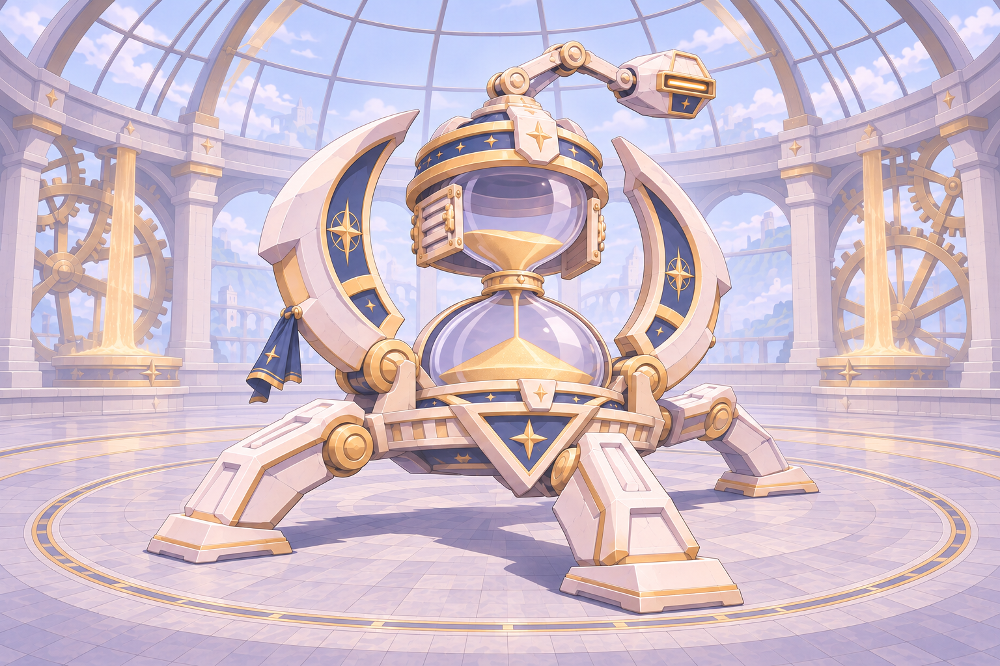

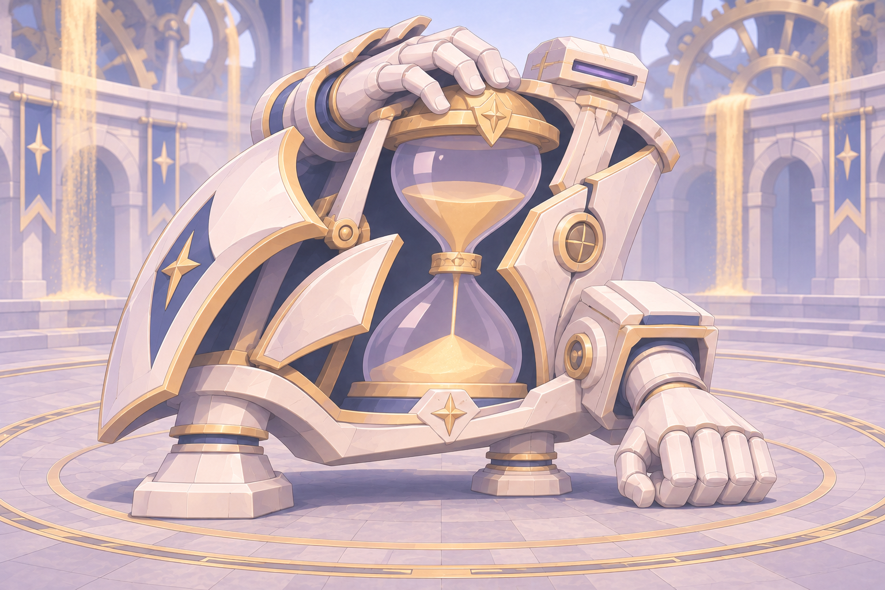

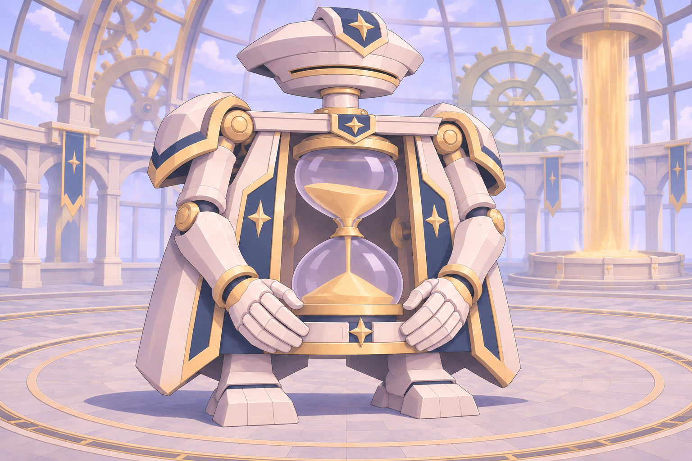
Stage02 · 끝나지 않는 진혼곡의 무희

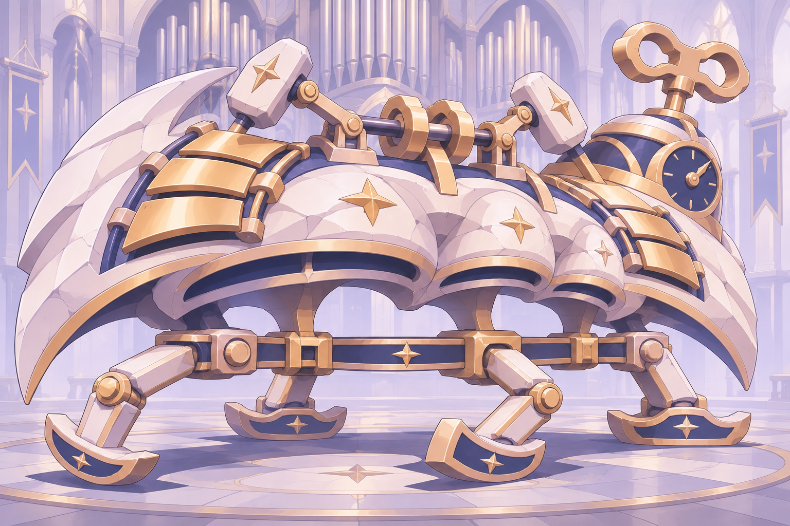

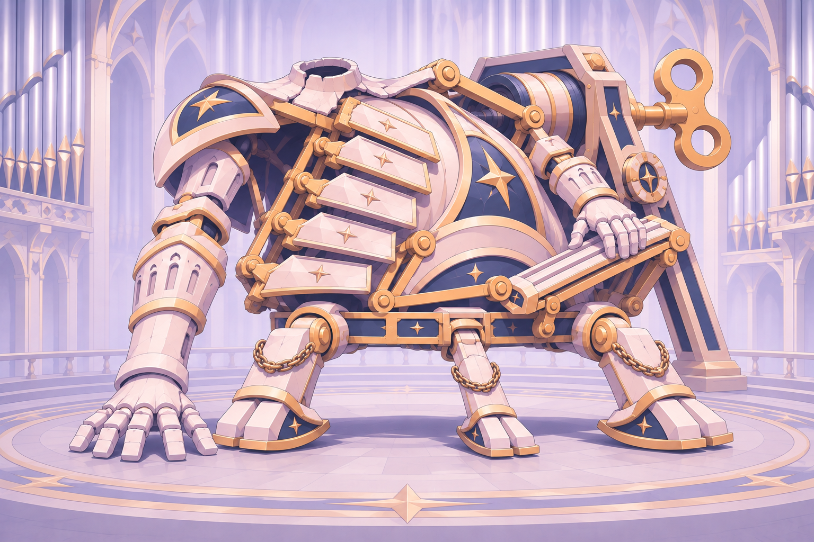

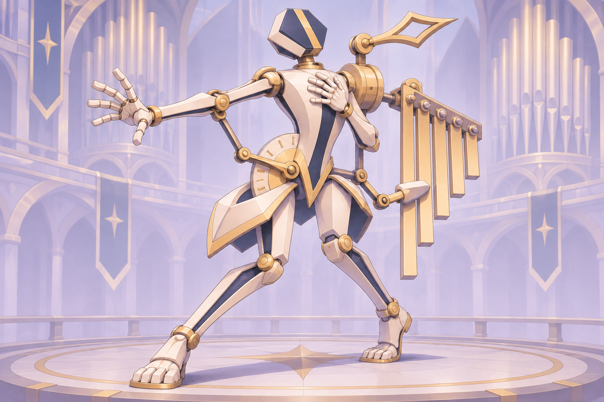
Stage03 · 얼어붙은 혈관의 연금술사

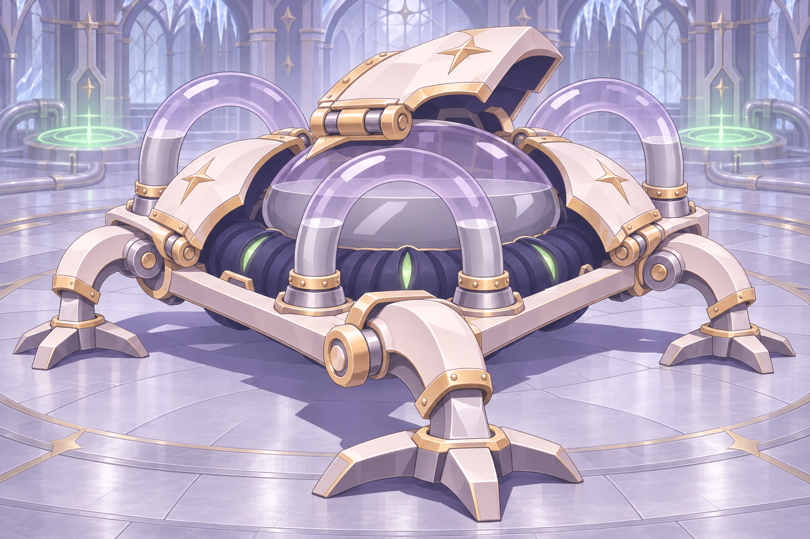

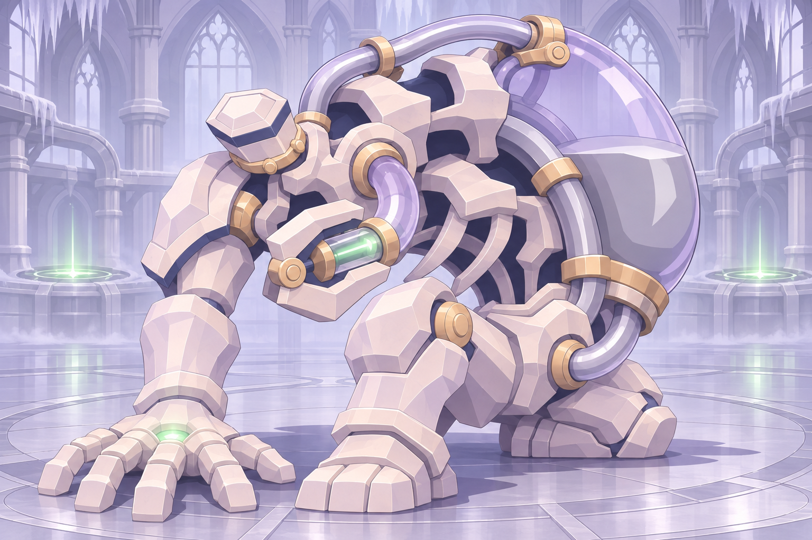

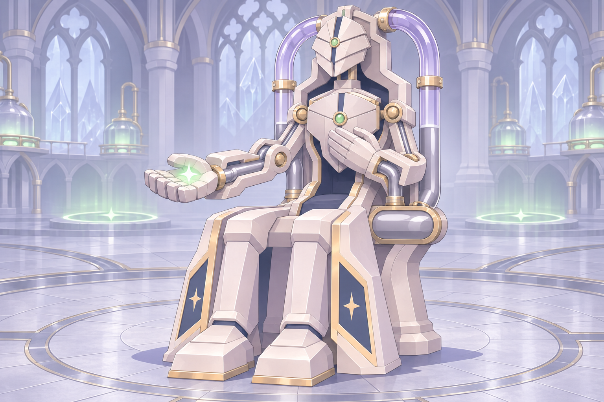
Stage04 · 영원히 타오르는 가마의 수호자

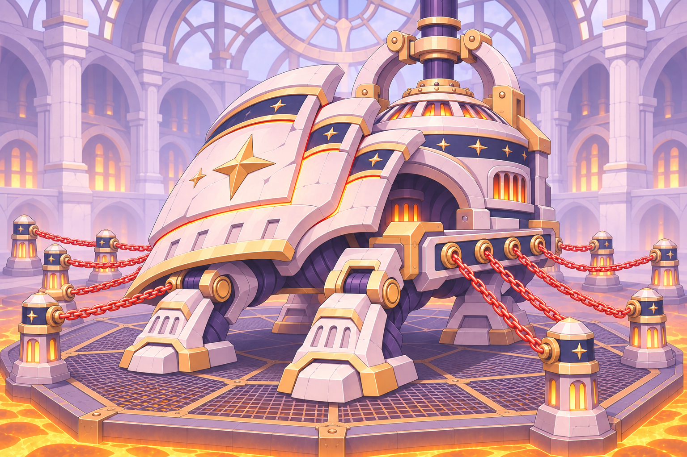

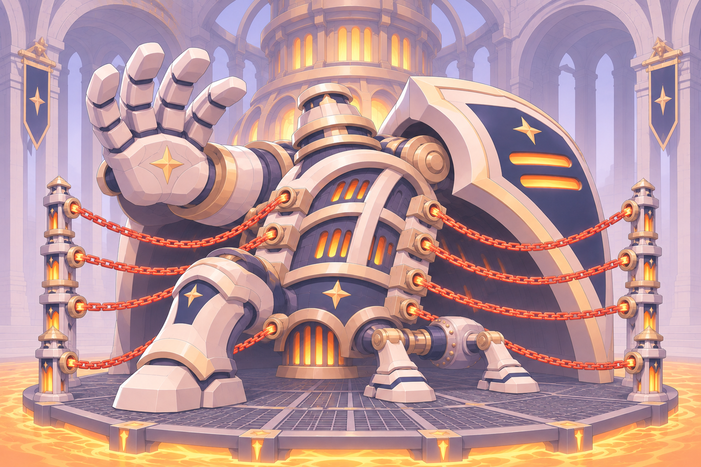

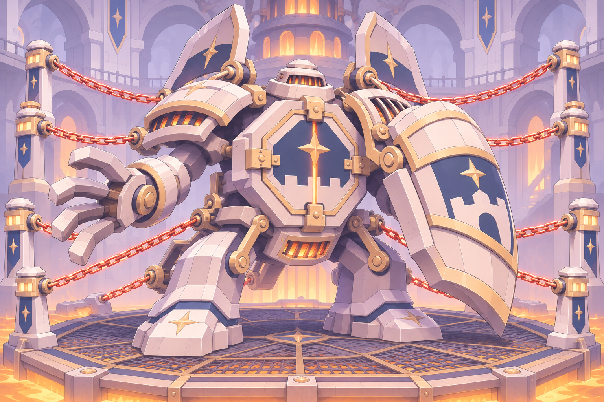
Stage05 · 무너진 천구를 떠받치는 부단장

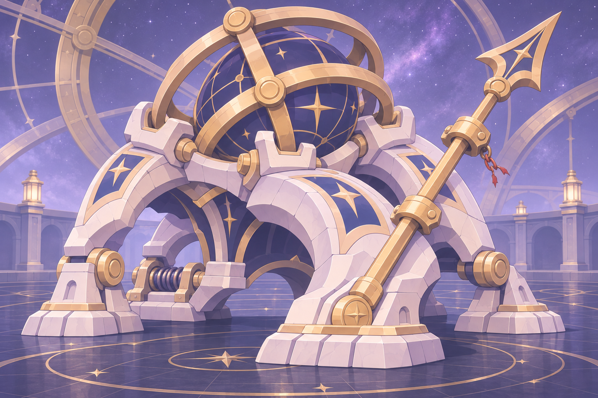

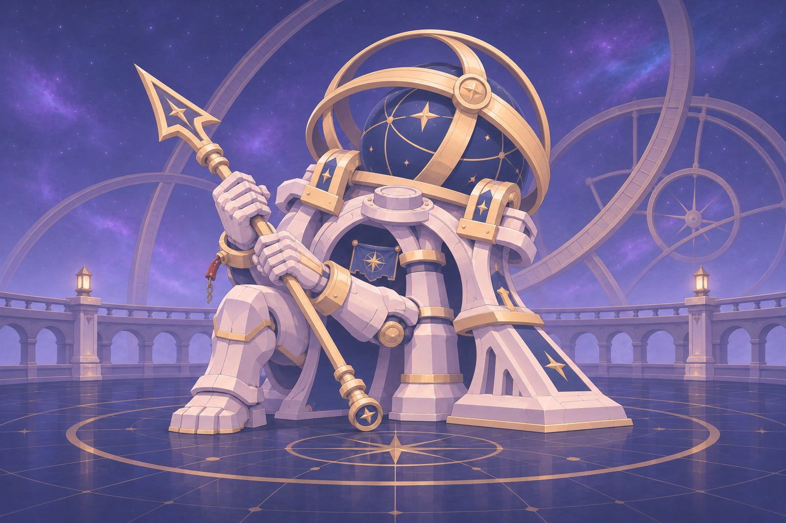

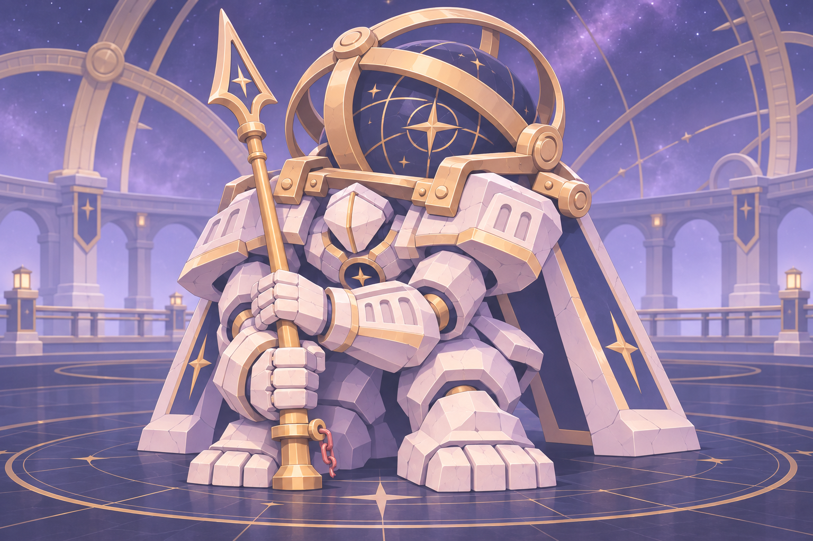
제작: 내장 image_gen. 본 자료는 비교용 컨셉 일러스트이며 실제 3D 메시나 회전 렌더가 아닙니다. 전체 프롬프트 · 공통 아트 방향